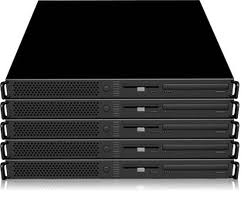
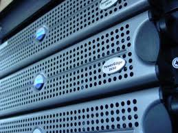

Handrock Software is a technology consulting firm focused on building practical, reliable, and scalable software solutions. We help organizations turn ideas into working systems by combining strong technical experience with a clear understanding of business needs. Whether the goal is modernizing existing platforms, building new applications, improving automation, or integrating AI capabilities, we aim to deliver solutions that are effective, maintainable, and aligned with long-term business value.
What we do
We provide hands-on consulting in software architecture, application development, system integration, cloud solutions, and technical problem solving. Our approach is straightforward: understand the client's goals, identify the right solution, and execute with professionalism and care. We value quality, transparency, and collaboration, and we work closely with clients to support both immediate project needs and future growth.
Technology focus areas
We support digital platform modernization, cloud infrastructure, integration architecture, and resilient software operations across enterprise environments.

